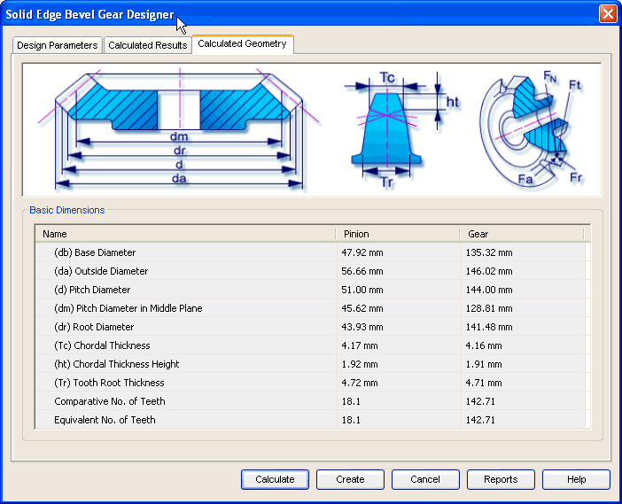

Bevel Gear Calculated Geometry tab
The Calculated Geometry tab provides the options you use to view additional results of calculation. These results are the parameters to define the geometry of the gear and pinion. Hence these are used to build the 3D model of gear and pinion.
